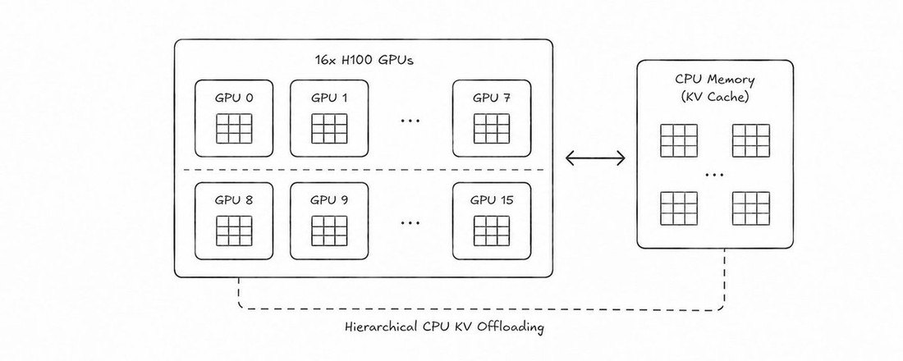
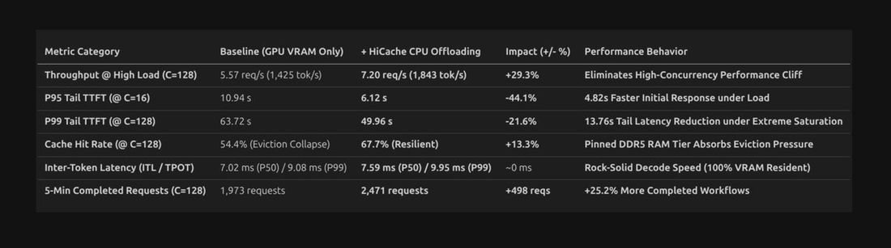
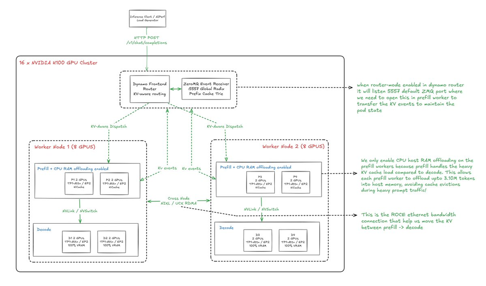
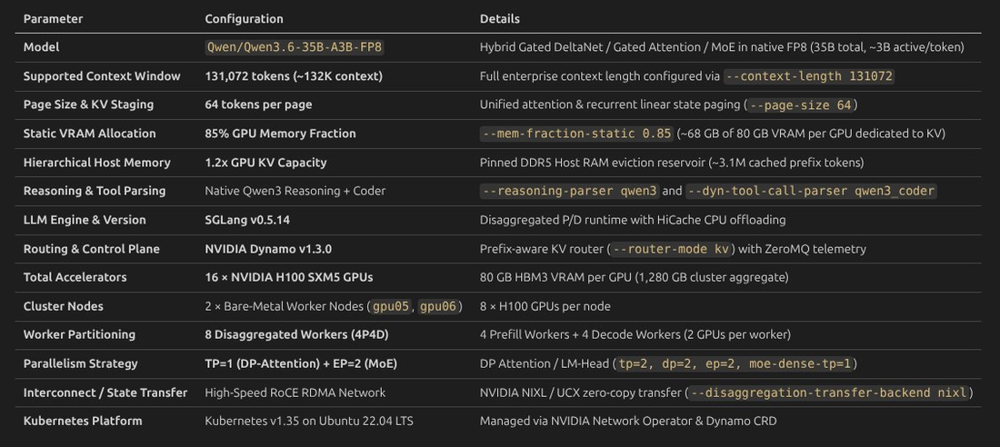
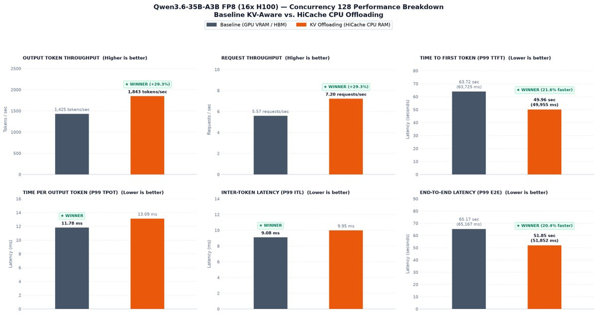
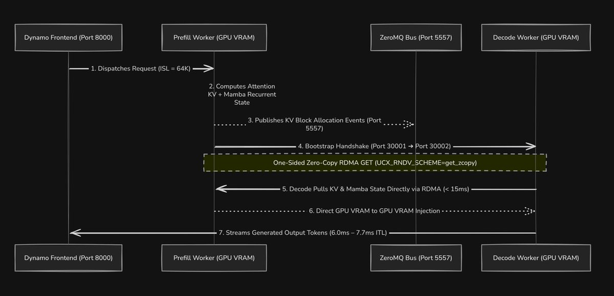
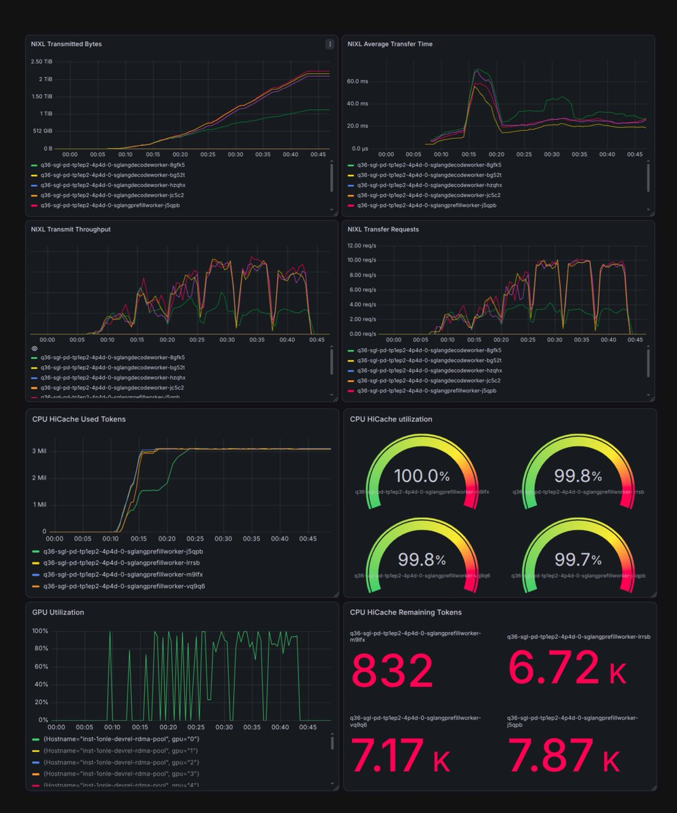
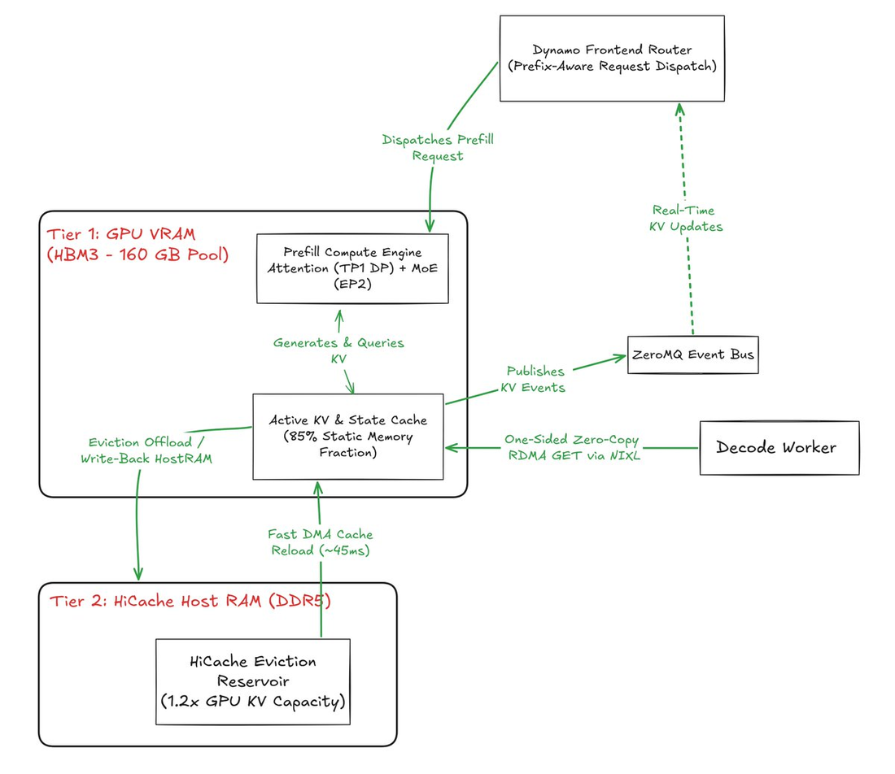
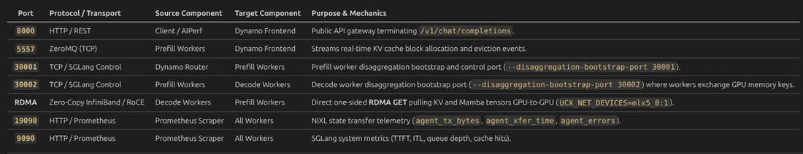
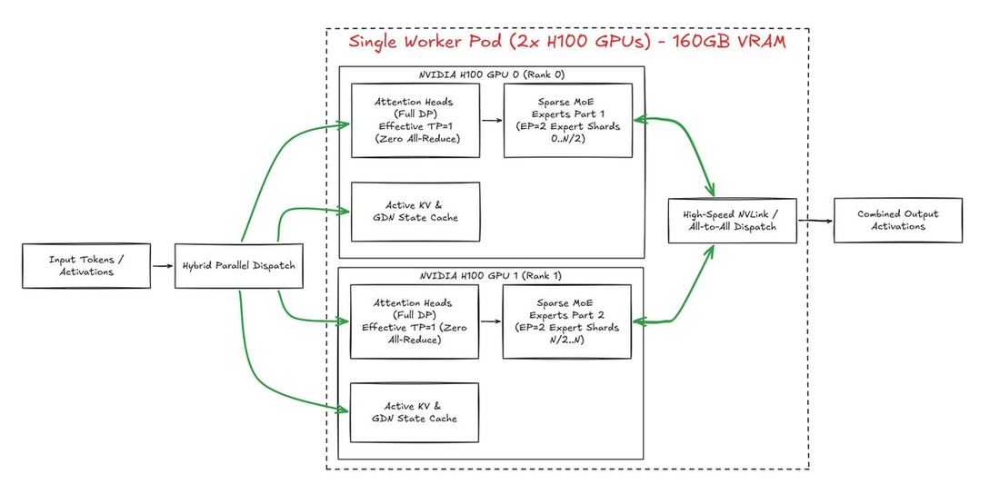

KV cache offloading是现代推理基础设施里最有趣的技术之一：它让固定的GPU服务器集群能在不换硬件的情况下服务显著更多的并发用户。本文是一个生产级深度实测（作者为开源中的LLM inference方向工程师）。
在16块H100的分离式（Disaggregated）4P4D集群上，对比Baseline KV-Aware Routing与Baseline + CPU KV Offloading（HiCache），模型为Qwen3.6-35B-A3B-FP8，任务规模3.10M token故意超出物理GPU VRAM容量。
本文为GitHub README格式，命令摘录作说明用途，含代码标识符。
KV cache offloading是当今推理基础设施最有意思的技术之一：它通过把不活跃的KV cache从昂贵的VRAM移到便宜的CPU/系统内存，解锁在固定GPU服务器上服务显著更多并发用户的能力。

这篇深度工程评测对比Baseline KV-Aware Routing vsBaseline + CPU KV Offloading（利用SGLang的分层HiCache进行），部署在分离式4 Prefill + 4 Decode（4P4D）服务拓扑、16块H100的裸金属集群上（Qwen3.6-35B-A3B-FP8）。
目标是评估Hierarchical CPU KV Offloading（HiCache）如何为一个生产4P4D集群扩展到更高的并发。随并发增长评估四个性能支柱：
① 吞吐：VRAM耗尽时offload到CPU内存能否保吞吐，还是成为瓶颈？
② 取回速度：从系统RAM取64K缓存token比在Tensor Cores上重算快多少？
③ prefill隔离：能否激进offload prefill worker而不拖慢活动用户的token生成？
④ 缓存命中：KV-aware routing在持续多用户压力下能否保护缓存命中率？
硬件规格：本文给出精确的裸金属集群硬件、互联（16×H100规格 + 互联拓扑，见原文规格区）。

总体架构：16-GPU分离式集群，4个Prefill worker + 4个Decode worker。Prefill负责prompt tokenization、自注意力计算、线性循环状态更新；Decode专职逐token自回归生成；两者经NIXL高效传输KV cache。
对Qwen3.6-35B-A3B-FP8，标准张量并行（TP）跨attention层会引入不可忽略的all-reduce通信开销。为在2-GPU worker pod上最大化效率，配置了专用混合并行策略：稠密（attention与线性）路径用数据并行，稀疏MoE用专家并行。

在SGLang里跨2-GPU pod服务这个混合MoE模型，需要把混合架构的两种路径解耦。关键：pod用 `--tp-size 2` 建跨两块物理卡的进程组；但为去掉瓶颈设 `--moe-dense-tp-size 1`，告诉MoE运行时稠密路径不要用TP=2；配合 `--enable-dp-attention`、`--enable-dp-lm-head`、`--dp-size 2`，attention和LM-head走数据并行：尤其在大prefill阶段价值大，避免把NVLink变成同步屏障。

2-GPU pod的并行flag配置片段（原文）：

# Hybrid parallelism (2-GPU pod)
--tp-size2
--moe-dense-tp-size1# dense path -> no TP all-reduce
--enable-dp-attention1
--enable-dp-lm-head1
--dp-size2
--ep-size2# sparse MoE -> expert parallel
--disaggregation-transfer-backendnixl稀疏MoE层用完全不同的策略：`--ep-size 2` 把expert权重分布到两张卡、NVLink all-to-all交换token。
也就是说两块GPU同时扮演两个并行角色：attention/稠密路径：两块像独立的数据并行worker（零all-reduce）；稀疏expert层：两块像双向专家并行团队（NVLink all-to-all token交换）。这让部署同时利用pod的聚合160GB VRAM容量和算力。
最后是分离：`--disaggregation-transfer-backend nixl`，prefill/decode worker分离；prefill构造好生成所需请求状态后，NIXL直接把完整KV cache流式转移到decode卡。整个执行路径无缝流动。
Dynamo Frontend扮演智能入口网关和集群的中心路由大脑：终止连接、据此分发请求。相比盲目round-robin，它做KV-aware routing。Frontend配置片段（原文）：

# Dynamo Router · KV-aware routing
--router-modekv
--router-host-cache-hit-weight0.75
# scores GPU-resident KV workers first,
# then workers able to reload from host <50ms
# candidate affinity evaluated in <1.5ms配置片段和原文一致（见原文组件1的Frontend YAML snippet）。
评分优先GPU驻留KV块的worker、其次能快速（sub-50ms）从host重载的worker。router在<1.5ms 内评估候选 worker 亲和度、派发给最高分 worker。
生产警告：扩展frontend前要知道你的工作负载、按规模放大frontend。
Prefill Worker处理初始prompt tokenization、自注意力计算、线性循环状态更新。高并发下，单一GPU VRAM装不下多个64K前缀组的工作集，SGLang的HiCache在pinned host DDR5缓冲被逐出的块。Prefill worker配置片段（原文）：

# Prefill worker · HiCache offloading
--enable-hierarchical-cache
--hicache-write-policywrite_back
--hicache-mem-layoutpage_first_direct
--hicache-io-backenddirect
--disaggregation-modeprefill
--disaggregation-transfer-backendnixl
--disaggregation-bootstrap-port30001
--enable-cache-report# ZeroMQ -> router
# reload over PCIe Gen5 ~45ms (40 lanes)说明：`--enable-hierarchical-cache` 激活多级存储子系统；`--hicache-write-policy write_back` 优化PCIe效率：新生成的KV块活跃计算期间独占留在GPU VRAM、被逐出时写回；`--hicache-mem-layout page_first_direct` 配 `--hicache-io-backend direct` 让引擎绕过中间CPU staging、直接驱动PCIe Gen5；`kv-events-config` 用ZeroMQ把实时块分配/逐出通知流给router。
警告：标准工作负载避免 `write_through` 策略：谨慎使用 `--hicache-` 相关write-through配置。
分离式P/D架构里，prefill算prompt激活但不生成token。端口与通信是部署里最关键的决策之一。

Decode Worker如何「拉取」状态（分步）：
① Bootstrap协调（Port 30001→30002）：prefill完成prompt tokenization和attention后，经bootstrap端口通知decode worker就绪。
② 单边RDMA GET：decode worker不让prefill经CPU内存推数据，而是自己主动用单边RDMA GET拉取。
③ 双状态注入：自注意力KV块和GDN循环线性状态同时被拉取。
④ Sub-15ms交接：完整64K上下文状态在<15ms 内直接落到 decode GPU 的 VRAM 开始生成。
State Transfer环境配置片段（原文）：
# NIXL over RDMA · state transfer env
UCX_TLS=rc_x,rc,cuda_copy,cuda_ipc
UCX_RNDV_SCHEME=get_zcopy
UCX_RNDV_THRESH=0
UCX_IB_REG_METHODS=odp,rcache
NIXL_TELEMETRY_ENABLE=1
NIXL_TELEMETRY_PROMETHEUS_PORT=<port>说明：`UCX_TLS rc_x,rc,cuda_copy,cuda_ipc` 让UCX用CUDA IPC做节点内GPU传输、RDMA做跨节点；`UCX_RNDV_SCHEME get_zcopy`+`UCX_RNDV_THRESH 0` 强制zero-copy；`UCX_IB_REG_METHODS odp,rcache`（On-Demand Paging）消除内存注册开销；`NIXL_TELEMETRY_ENABLE` 暴露实时传输吞吐/延迟指标。
Decode Worker专职逐token自回归生成，直接从prefill拉取live KV注入生成循环。

为何offload只放prefill：解码worker不开分层缓存。把host offloading全集中到prefill：前缀缓存命中在prefill最要紧，decode保持100% VRAM驻留保证零抖动token生成。
Decode worker显式镜像prefill的混合并行拓扑（TP=1 DP-Attention + EP=2 MoE），保持相同内存参数（context-length 131072、page-size、mem-fraction-static）；绑到port 30002分离入站decode控制面。Decode配置片段（原文）：
# Decode worker (AR engine)
# mirror prefill hybrid topology
--disaggregation-modedecode
--disaggregation-bootstrap-port30002
--context-length131072
# keep 100% VRAM-resident, zero-jitter generation评测设定：模型Qwen/Qwen3.6-35B-A3B-FP8；输入64,536 token（64K）固定模式；输出256 token；共享前缀工作集=64个不同前缀组、75% 目标前缀复用（48,402共享token/组）；并发扫描8→128；每级300秒稳态 + 16个warmup。这是prefill-heavy实验（64K输入vs 256输出，约252:1）。3.10M token有意超出物理GPU VRAM缓存容量。

① 吞吐与并发悬崖：C=128时baseline VRAM-only撞上严重内存墙、因缓存逐出崩溃；HiCache下输出吞吐跳到1,843 tokens/s、请求率7.x/s。
② P99 TTFT：极端饱和下baseline因prefill worker持续卡在重算而排队阻塞；HiCache下P99 TTFT降到49.96秒，快21.6%、省13.76秒。
③ 解码隔离（P99 TPOT/ITL）：因为offload严格限定在prefill worker、decode 100% VRAM驻留，token生成不被host RAM流量拖慢。
④ 端到端（P99 E2E）：靠巨大prefill加速，整体工作流周转大幅改善，企业agentic工作流端到端完成更快、不牺牲逐token生成质量。
⑤ 缓存动态：baseline缓存命中率从77.0% 崩到54.4%、触发昂贵的64K prefill重算；HiCache通过在pinned host DDR5缓冲被逐出块并重载、阻止这种崩溃。
零拷贝RDMA KV传输（NIXL）：warmup后NIXL平均传输时间稳定在紧凑的15ms–20ms（sub-20ms传输延迟）；NIXL累计传输字节数跨worker稳步超过2.50 TiB：单边UCX内存注册完全防住网络传输瓶颈。
Host RAM饱和与工作集吸收（HiCache）：CPU HiCache Used Tokens面板显示token数在负载期快速攀升；4个prefill worker的CPU HiCache利用率表计显示99.7%–100%：pinned DDR5 host RAM层以最高效率运转、持有超额前缀工作集。
这个参考部署证明：分离式4P4D服务 + HiCache CPU KV Offloading从根本上重塑GPU隔离能力。分布式推理最大的瓶颈之一是在worker间管理海量KV cache：当prefill需要长时间持有的KV块超出VRAM时。
把host DDR5 RAM当作无缝的二级缓存水库，prefill worker得到增长所需的净空；把这种分层内存层与Dynamo的前缀感知路由、NIXL的零拷贝RDMA状态传输耦合，得到具体收益：
消除并发悬崖：C=128时峰值吞吐 +29.3%（防VRAM逐出崩塌）。
砍尾延迟：负载下P95 TTFT -44.1%、经 ~45ms PCIe重载把P99响应省13.76s。
保护解码速度：100% VRAM驻留decode保持坚如磐石的token间延迟（<10ms P99 ITL）。
零GPU成本扩容：现成硬件上翻倍有效前缀缓存容量（3.10M+ token）。
作者的话：承诺这系列带来生产级推理基准，做到了；从无法想象能拿到集群，到这里一步步跑通。特别感谢开源社区与算力赞助者的支持（作者使用开放预算）。下一篇写张量并行如何意外损害整体吞吐。
参考：https://x.com/jaga_prasanna/status/2093217133841064233